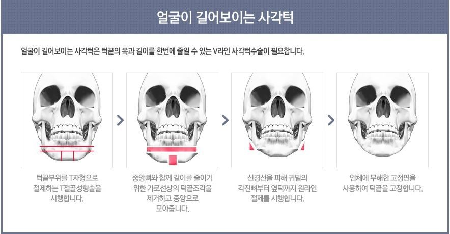

사각턱 을 지닌 박재진은 원래 수학을 잘해서 1등을 휩쓸고 다녔지만 지금은 수학6등까지 떨어져서 나락을 치고있다.재진이의 사각턱은 워낙 돋보여서 마스트도 가리지못하며 치악력이 매우 우수하여 구강 엑스레이를 촬영할때 기계를 파손한 사례도 있다. 좋아하는 동물은 악어이며 검은색을 좋아하고 가수로는 아이유의 팬이라고 밝혀지기도했다. 그를 탐구하며 연구하는 학문도 생겨났을 정도로 그의 인기는 제우스에게 똥침을 넣을정도 로 하늘을 치솟았다.그에 제우스는 노하여 그에게 번개를 내리치는데 박재진은 그 번개를 맞고도 살아남아 전 인류에게 희망을 심어줬다.이에 따라 그리스에서는 파르테논신전을 허물어버리고 Park.J.J 신전을 새로 짓고있다.앞으로 그의 행보가 기대된다.
